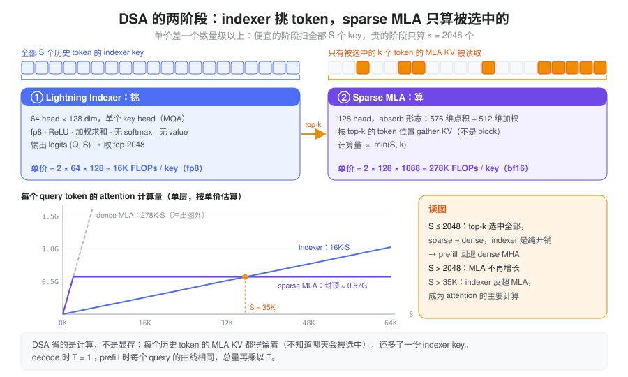
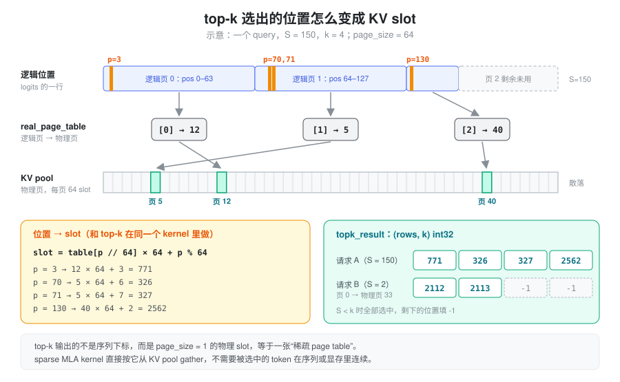
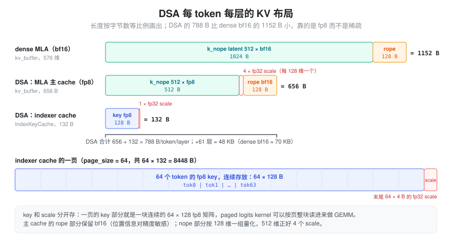
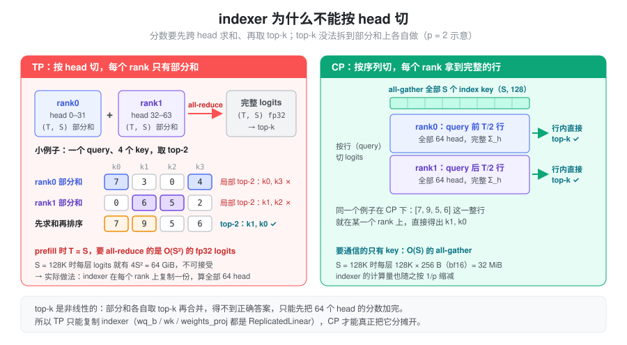
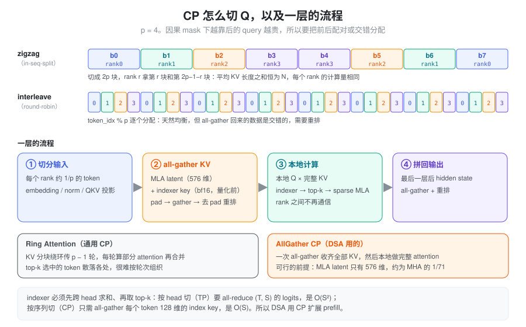

DSA（DeepSeek Sparse Attention）= 先用一个极便宜的打分器给所有历史 token 排序，再只对 top-k 个 token 做真正的 attention。 DeepSeek-V3.2 和 GLM-5 都用它，k = 2048。它省下的是长上下文的计算量，KV cache 一条都没少，反而多存了一份 indexer 的 key。下文先讲要解决的问题和设计，再讲 indexer、两份 KV cache、并行方式，最后对照 SGLang 的实现。
问题：MLA 省了显存，没省计算
MLA 把每个 token 的 KV 压成 576 维的 latent，KV cache 已经很小了（见 MLA）。但 attention 的计算量仍然随上下文长度 S 线性增长：absorb 形态下每个 query head 要和 S 个 latent 做 576 维的点积，再对 512 维的 value 做加权和。
V3 有 128 个 query head，所以 decode 时每多一个历史 token，每个 query 大约多出
2 \times 128 \times (576 + 512) \approx 278\text{K FLOPs}
上下文到 128K 时，attention 的计算会超过 MLP，成为 decode 的主要开销；prefill 则是 O(S^2)。
能不能只算一部分 token？softmax 的权重本来就高度集中，大部分 token 的贡献接近 0。难点在于怎么知道该算哪些：用真 attention 打分再挑，等于已经把账全算了一遍。
设计：两阶段，先挑后算

DSA 把 attention 拆成两个阶段：
- Lightning Indexer（挑）：对全部 S 个历史 token 打一个相关性分数。它就是一个极简的 attention 前半段：少量 head、单个 key head（MQA）、fp8 低精度、没有 softmax、没有 value。
- Sparse MLA（算）：只对分数最高的 k 个 token 做原本的 MLA attention，计算量从 \propto S 变成 \propto \min(S, k)。
整个设计成立的关键是两个阶段单价差了一个数量级以上。indexer 每个 key 的代价是 2 \times 64 \times 128 \approx 16\text{K} 次 fp8 乘加，比 MLA 的 278K 次 bf16 便宜约 17 倍（算上 fp8 的吞吐优势还要更多）。所以 indexer 虽然仍要扫一遍全部历史，斜率却很小；真正贵的 MLA 被截断在 k 个 token 上。
代价有两个：
- KV cache 不减反增。哪个 token 会被选中事先不知道，所以每个历史 token 的 MLA KV 都得留着，还要额外存一份 indexer key。这也是后来 V4 的 CSA / HCA 要解决的问题。另一条路是利用”每步只读 k 个”这一点，把完整 KV 放到 host 内存，只把选中的换进显存（SGLang 的 HiSparse，见文末）。
- 短序列没收益。当 S \le k 时 top-k 会选中全部 token，sparse 等于 dense，indexer 纯属额外开销。
Lightning Indexer：一个极简的 attention 前半段
打分公式
对 query token t 和历史 token s，indexer 的分数是
I_{t,s} = \sum_{j=1}^{H^I} w_{t,j} \cdot \mathrm{ReLU}\!\left(q_{t,j} \cdot k_s\right)
- H^I = 64：indexer 的
head 数，head dim 为 128（V3.2 的配置，取自模型 config 的
index_n_heads/index_head_dim）； - q_{t,j}：由 MLA 的 q
latent（
q_lora_rank维）经wq_b投影得到，每个 head 一个； - k_s：由 hidden state 经
wk投影、再过一个 norm 得到，所有 head 共用一个 key（MQA），所以 cache 里每个 token 只存一条 128 维的 key； - w_{t,j}：由 hidden
state 经
weights_proj得到的 per-head 门控，按 query 自适应地决定每个 head 的话语权。
和真 attention 相比，它少了三样东西：没有 softmax（只需要排序，不需要归一化）、没有 value 聚合、ReLU 把负相关直接截成 0。q 和 k 的前 64 维会加 RoPE，所以分数也带位置信息。
fp8 与 scale 的吸收
为了让扫全部历史足够便宜，q 和 k 都量化成 fp8（block size 128，即每个 head 一个 scale；scale 格式为 ue8m0）。计算流程如下：
\begin{aligned} q_{\text{fp8}} &: (Q, H, d) && k_{\text{fp8}} : (K, d), \quad \text{weights} : (Q, H) \\ \text{GEMM} &: (Q \cdot H, d) \; @ \; (K, d)^\top \rightarrow (Q \cdot H, K) && \text{每个 head 的点积} \\ \mathrm{ReLU},\ \times\,\text{weight},\ \textstyle\sum_h &: (Q \cdot H, K) \rightarrow (Q, K) && \text{截断、加权、跨 head 求和} \\ \times\, k_{\text{scale}} &: (Q, K) && \text{乘 key 的反量化 scale} \\ \text{输出} &: \text{logits}\ (Q, K)\ \text{fp32} \end{aligned}

这里有个小技巧：q 的反量化 scale、1/\sqrt{d} 和 1/\sqrt{H} 都和 (q, h) 绑定，可以提前乘进
per-head 门控里，GEMM 输出直接就是加权后的
logit。实现（_get_logits_head_gate）只有三行：
weights = self._weights_proj_bf16_in_fp32_out(x) # (T, H)
weights = weights * self.n_heads**-0.5 # 1/√H
weights = weights.unsqueeze(-1) * q_scale * self.softmax_scale # q 反量化 scale、1/√d于是
\text{logit}[q, k] = \sum_h \text{weight}[q,h] \cdot \mathrm{ReLU}\!\left(q_{\text{fp8}}[q,h] \cdot k_{\text{fp8}}[k]\right) \cdot k_{\text{scale}}[k] = \sum_h \frac{g[q,h]}{\sqrt{H}} \cdot \mathrm{ReLU}\!\left(\frac{q[q,h] \cdot k[k]}{\sqrt{d}}\right)
其中 g 是
weights_proj
的原始输出。第二个等号成立，是因为反量化 scale 和 1/\sqrt{d} 都是正数，\mathrm{ReLU}(a x) =
a\,\mathrm{ReLU}(x)（a>0），可以自由地移进移出
ReLU。k_{\text{scale}} 是
per-key 的，不能并进门控，只能在求和之后再乘。
另外，q 和 k 在量化前会做一次 Hadamard
旋转（rotate_activation），把离群值摊到各个维度上，降低
fp8 的量化误差。由于 q 和 k
做了同一个正交变换，点积不变。
Top-k：选的是 token，不是 block
indexer 对每个 query 输出 (Q, K) 的 logits，再取 top-2048。选出的是 token 级的位置，不是 block。这和 NSA 论文里按 block 选择不同：token 粒度的选择更精确，但要求 sparse attention kernel 能处理完全不连续的 KV 访问。
位置本身还不能直接用：KV cache 是分页的，序列里相邻的 token 可能落在相距很远的物理页上。所以 top-k 之后还要把每个位置 p 经 page table 翻译成物理 slot：

翻译之后的结果是一张 (\text{rows}, k) 的 int32 表，每个元素就是一个物理 slot，相当于 page size 为 1 的稀疏 page table；上下文不足 k 时，空位填 -1。sparse MLA kernel 拿到的就是这张表，按 slot 去 gather KV，它完全不需要知道这些 token 原来在序列的哪里。
这一步翻译是逐元素的整数运算，所以实现上直接并进 top-k 的 kernel，选出来就是 slot，省掉一次单独的 index 转换。
两份 KV cache
indexer 的 key 和 MLA 的 latent 是两套独立的东西，所以 DSA 模型的每一层要存两份 cache：

| MLA 主 cache（bf16） | MLA 主 cache（fp8） | Indexer cache | |
|---|---|---|---|
| 存什么 | k_{\text{nope}} latent + k_{\text{rope}} | 同左，nope 部分量化 | indexer key（旋转后量化） |
| 布局 | 512 + 64 维，全 bf16 | 512 fp8 + 4 个 fp32 scale + 64 维 bf16 rope | 128 fp8 + 1 个 fp32 scale |
| 每 token 每层 | 1152 B | 656 B | 132 B |
fp8 主 cache 里 rope 部分保留 bf16，是因为位置信息对精度更敏感；nope 部分按 128 维一组量化，512 维正好 4 个 scale。这是 FlashMLA 这类 kernel 要的”带 scale”布局；trtllm、tilelang 等 kernel 用的是不带 scale 的原始布局，576 维全部 fp8，每 token 每层 576 B。具体用哪种布局取决于选中的 attention kernel，见文末实现部分。
按 61 层估算，每个 token 的显存开销约为：
- dense MLA（bf16）：1152 \times 61 \approx 70\text{KB}；
- DSA 的 MLA 部分（fp8）：656 \times 61 \approx 40\text{KB}；
- DSA 总计（fp8 MLA + indexer）：788 \times 61 \approx 48\text{KB}。
也就是说，indexer cache 只占 DSA 总 KV 的约 17%。DSA 相比 dense 能省显存，靠的是主 cache 的 fp8 量化，而不是稀疏本身。
为什么 DSA 用 MQA
关键在于：DSA（DeepSeek Sparse Attention）改变了 Prefill 阶段 Attention 的计算形态，使得 MLA 原先采用 MHA 计算路径的优势不再那么明显，而 MQA 形式的 KV 共享反而更有利于实现细粒度稀疏计算。
不过，需要先澄清一个容易混淆的地方：
MLA 的 MHA / MQA 是计算实现形式的区别，并不意味着 Prefill 和 Decode 使用了两套不同的模型参数或注意力语义。
在 MLA 中：
- Prefill：倾向于把低秩 KV 展开、吸收到 MHA 形式，利用 Tensor Core 执行大规模矩阵乘法。
- Decode：倾向于将 Query 变换到 latent 空间，让所有 Query Heads 共享压缩 KV，以减少 KV Cache 的 HBM 读取。
为什么这样设计？因为两阶段的瓶颈不同。
| MLA Prefill | MLA Decode | |
|---|---|---|
| Query Token 数量 | 大量 | 每个序列通常 1 个 |
| 主要计算形态 | 大规模矩阵乘法 | 矩阵向量乘法或小矩阵乘法 |
| 主要优化目标 | Tensor Core 吞吐 | KV Cache 访存 |
| 常用实现 | MHA 形式 | MQA 形式 |
DSA 的关键变化是引入了 Top-k Token Selection，从而改变了这个权衡。
1. DSA 的稀疏性破坏了原来 MHA 的主要优势
Dense MLA Prefill 可以进行这样的计算：
Q_h\in\mathbb{R}^{T\times192},\qquad K_h\in\mathbb{R}^{L\times192}
Q_hK_h^\top\in\mathbb{R}^{T\times L}
其中 T 是本次 Prefill 的 Query 数量，L 是可见的 KV 数量。
对于每个 Head，都是规则、连续的大矩阵乘法，因此 Tensor Core 利用率很高。
但 DSA 中，每个 Query Token 都有自己的 Top-k 集合：
S_t=\operatorname{TopK}(\operatorname{Indexer}(q_t,K))
注意，通常：
S_1\neq S_2\neq \cdots\neq S_T
所以原来的规则矩阵乘法变成：
o_{t,h}=\operatorname{Attention}(q_{t,h},K_{S_t},V_{S_t})
虽然 Prefill 有很多 Query Token，但每个 Query Token 访问的 KV 位置不同。
这意味着无法直接使用传统 Dense MHA 的大 GEMM 组织方式，高效跳过未选中的 Token。
当然，可以继续使用 MHA 表示，然后通过 gather 和稀疏 kernel 计算，但其规则性和数据复用优势会明显减弱。
2. MQA 恰好能在另一个维度恢复矩阵乘法
DSA 采用 MQA 模式后，对于一个 Query Token，128 个 Query Heads 可以共享同一份 Top-k KV。
DeepSeek-V3.2 的典型形状为：
Q_t\in\mathbb{R}^{128\times576}
K_{S_t}\in\mathbb{R}^{2048\times576}
因此 QK 计算可以组织为：
\underbrace{(128\times576)}_{Q} \underbrace{(576\times2048)}_{K^\top}
相应地，PV 计算是：
(128\times2048)(2048\times512)
你会发现一个很巧妙的地方：
原来的 Dense Prefill 是利用 Sequence 维度提供大 GEMM；DSA MQA 则利用 Head 维度提供大 GEMM。
这就是 MQA 不仅适合 Decode，而且也适合 Sparse Prefill 的原因。
3. MQA 还避免了 MHA 模式下的 KV 展开
在 MLA 中，MHA 形式需要将 latent KV 投影为各个 Head 的 K/V 表示。
而 MQA 形式则直接在压缩 latent 空间进行 Attention，通过 Query 侧的权重吸收保持等价计算。
对于 Dense Prefill，展开 KV 的开销可以被高效 GEMM 和后续规则 Attention 计算摊薄。
但在 DSA 中，如果每个 Query Token 都有不同的 Top-k 集合，那么展开后的 KV 要么提前为所有 Token 生成，要么在稀疏访问时按需生成。
前者产生额外计算和存储，后者使数据访问与计算组织更加复杂。
相比之下，MQA 可以直接：
- Lightning Indexer：为每个 Query Token 生成 Top-k 索引
- Gather latent KV：仅加载被选中的 2048 个 KV
- MQA Sparse Attention：128 个 Query Heads 共享选中的 KV
DeepSeek-V3.2 论文明确指出，出于 kernel 计算效率考虑，每个 KV 条目需要被多个 Query 共享，因此选择基于 MLA 的 MQA 模式实现 DSA。
4. 一个值得注意的细节
并不是说 DSA 在数学上必须使用 MQA。
理论上完全可以实现 MHA Sparse Prefill，也可以对所有 KV 进行 MHA 展开后再使用稀疏索引。
但它可能失去 DSA 最重要的工程收益：低成本的细粒度随机 KV 访问和跨 Head 复用。
而且，MQA 不等于所有 Query Heads 使用相同的 Attention 权重。它们共享 KV 和 Top-k 位置，但每个 Head 有不同的 Query，因此计算出来的 Attention Scores 和输出仍然不同。
总结一下：
| Dense MLA Prefill | DSA Sparse Prefill | |
|---|---|---|
| 计算模式 | MHA | MQA |
| KV 访问 | 规则、连续 | Top-k 随机访问 |
| 主要并行维度 | Sequence × Head | Head × Selected KV |
| KV 形式 | 展开为每 Head K/V | 共享 latent KV |
| 核心优势 | 大 GEMM 高吞吐 | 稀疏访问 + KV 复用 |
DeepSeek 官方 FlashMLA 也明确将 Dense Prefill 标记为 MHA 模式，而 Sparse Prefill 标记为 MQA 模式。
最值得记住的一句话：Dense Attention 依靠 Sequence 维度获得计算效率，Sparse Attention 在失去规则 Sequence 结构后，可以利用 MQA 的 Head 维度重新获得计算效率。
这不是 MQA 在所有情况下优于 MHA，而是 DSA 改变了最优 kernel 设计的约束条件。
计算量：哪一部分还在随长度增长
记 query 长度为 T（decode 时为 1），上下文长度为 S，query head 数为 N = 128。absorb 形态下：
\begin{aligned} \text{dense MLA} &: 2BTS \cdot N (576 + 512) \\ \text{sparse MLA} &: 2BT \cdot \min(S, k) \cdot N (576 + 512) \\ \text{indexer} &: 2BTS \cdot H^I d^I = 2BTS \cdot 64 \cdot 128 \end{aligned}
sparse MLA 在 S > k = 2048 之后就不再增长，增长的只剩 indexer。按单价算，indexer 每个 key 约 16K FLOPs，sparse MLA 封顶在 2048 \times 278\text{K} \approx 570\text{M} FLOPs，两者在 S \approx 35\text{K} 时持平。更长的上下文里，indexer 反而成了 attention 的主要计算，只是它跑在 fp8 上，吞吐约是 bf16 的 2 倍。
这一点直接影响并行方式的选择：indexer 的 64 个 head 在 TP 下不切分（原因见下一节），MLA 的 128 个 head 却会被 TP 切掉。TP=8 时每个 rank 只剩 16 个 MLA head，indexer 的相对占比还要再大 8 倍。
再省 indexer：跨层复用与 kpool
既然长上下文下 indexer 成了大头，后续模型从两个方向继续压它，思路都是”挑得粗一点，换取扫得少一点”。
跨层复用 top-k。相邻层选中的 token 往往高度重合，于是可以让一部分层不建 indexer，直接沿用上一层的 top-k 结果。这样这些层的 indexer 计算和 indexer cache 都省掉了，sparse MLA 照常做。哪些层复用由模型 config 决定（逐层标记、每隔几层算一次等几种写法），代码里统一叫 skip-topk 层。
kpool：把相邻 token 的 key 池化。把每
c 个相邻 token 的 index key
用一个学习到的 softmax 门控加权合成一个池化
key（c 即 config 里的
index_kpool）。indexer 只对池化 key
打分，扫描量和 indexer cache 都降为 1/c；top-k 选的是 k/c 个组，再展开回 k 个 token 交给 sparse
MLA。最后一个组还没攒满 c
个 token，无法池化，所以这个”尾巴”总是被直接选中。这其实是向
NSA 的 block 选择退回了一步：indexer 的选择粒度变粗，MLA
侧仍按 token 读 KV。
并行：为什么 DSA 偏爱 CP
indexer 不能按 head 切
TP 的常规做法是按 head 切分。但 indexer 的分数要先跨 head 求和，再取 top-k，而 top-k 是非线性的：各 rank 对自己的部分和各取 top-k 再合并，得不到正确答案。

如果按 head 切，就必须先把 (T, S) 的 fp32 logits 做一次 all-reduce 才能排序。prefill 时 T = S，这次通信是 O(S^2) 的，完全不可接受。所以在 TP 下，indexer 在每个 rank 上复制一份，各自算完整的 64 个 head。
CP（context parallel）按序列切分则没有这个问题：每个 rank 只负责自己那段 query，只需要拿到全部历史 token 的 indexer key，也就是做一次 all-gather，通信量是 O(S)。
通信量对比
记并行度为 p、隐藏维度为 7168，下表是 prefill（T = S）时每个 rank 每层大约收到的数据量：
| TP（切 head） | CP（切序列） | |
|---|---|---|
| indexer | logits all-reduce：\frac{2(p-1)}{p} \cdot 4S^2 | index key all-gather：\frac{p-1}{p} \cdot 256\,S |
| sparse MLA | o_proj all-reduce：\frac{2(p-1)}{p} \cdot 2 \cdot 7168\,S | latent all-gather：\frac{p-1}{p} \cdot 1152\,S |
indexer 一行是 O(S^2) 对 O(S)；MLA 一行两边都是 O(S)，但 CP 小约 25 倍。计算上的差别同样明显：
| TP（切 head） | CP（切序列） | |
|---|---|---|
| indexer 计算 | 不减少（复制） | 按 1/p 缩减 |
| QKV 投影 | 按 head 缩减 | 按 token 缩减 |
| attention | Q 的 head 数缩减，KV 长度不变 | Q 的长度缩减，KV 全量 |
AllGather CP：一次收齐，而不是绕环
通用的 CP 方案是 Ring Attention：KV 分块绕环传递 p-1 轮，每轮算一部分 attention，最后合并。DSA 的 CP 更简单，一次 all-gather 收齐全部 KV，然后每个 rank 用本地 Q 对完整 KV 做一次完整的 attention：
| Ring Attention | AllGather CP | |
|---|---|---|
| 通信方式 | P2P send/recv，KV 绕环 | 一次 all-gather |
| 通信轮次 | p - 1 轮 | 1 轮 |
| 计算 | 每轮算部分 attention，最后合并 | 收齐后做完整 attention |
能这么做，是因为 MLA 的 KV 足够小。如果把 V3 的 128 个 head 展开成普通 MHA，每个 token 的 K/V 是 128 \times (192 + 128) = 40960 维，是 576 维 latent 的约 71 倍，all-gather 全量 KV 就不现实了。对 DSA 来说还有一个额外的理由：top-k 选中的 token 可能散落在整个序列的任何位置，ring 方式很难提前知道某一轮的 KV 块里有没有被选中的 token。
怎么切 Q：zigzag 与 interleave
因果 mask 下，越靠后的 query 要看的 KV 越多。如果把序列直接切成 p 段，最后一个 rank 的计算量约是第一个的 2p-1 倍。有两种负载均衡的切法：

- zigzag（原名 in-seq-split）：先切成 2p 块，rank r 拿第 r 块和第 2p-1-r 块，一头一尾配对。以 8000 个 token、p=4、每块 1000 个 token 为例：rank0 拿 b0（平均看约 500 个 KV）和 b7（约 7500），rank3 拿 b3（约 3500）和 b4（约 4500）。每个 rank 的总量都是 1000 \times 8000 = 8\text{M}，因为配对两块的平均 KV 长度之和恒为 N。
- interleave（原名
round-robin-split）：按
token_idx % p逐个分配，每个 rank 的 token 均匀散布在整个序列里，天然均衡。代价是 all-gather 回来的数据是交错的，要做一次重排才能恢复原始顺序。
严格来说，DSA 的 sparse 部分每个 query 最多只看 k 个 token，负载不均主要来自 indexer：它仍然要对 S 个 key 全量打分，因果 mask 下的计算量分布和 dense attention 一样。
两种切法在概念上都成立，但目前 SGLang 里 DeepSeek-V3.2 的 prefill CP 只支持 interleave：indexer key 的 all-gather 只在 interleave 策略里实现，选 zigzag 会在启动时直接报错。
一层的流程
- 切分输入：每个 rank 只拿到约 1/p 的 token，独立做 embedding、norm 和 QKV 投影。
- all-gather KV：每个 rank 算出自己那部分 token 的 MLA latent（k_{\text{nope}} + k_{\text{pe}}）和 indexer key，各做一次 all-gather 并重排回原始顺序。之后每个 rank 都持有整条序列的 KV，并写入自己的 cache。
- 本地计算：用本地的 Q 对完整 KV 跑 indexer、top-k 和 sparse MLA，各 rank 之间不需要再通信。
- 拼回输出：最后一层结束后，各 rank 的 hidden state 再 all-gather 并重排，得到完整序列。
all-gather 要求各 rank 的 shape 相同，所以发送前先把本地数据 pad 到统一长度，收到后再去掉 padding 并按切分方式逆序重排。
实现
以下路径都相对于 python/sglang/srt/。这个
fork 已经把代码里的 NSA 统一改名为
DSA：layers/attention/nsa/ 只剩带
DeprecationWarning 的转发
shim，--attention-backend nsa 也只是
dsa 的别名。
模型与 indexer
- 哪些模型：由
configs/model_config.py的is_deepseek_dsa判定，条件是架构在白名单里（DeepSeek-V3/V3.2、GLM-5 的GlmMoeDsaForCausalLM、LongCat-Flash 等，以及它们的 NextN 草稿模型），并且 config 里有index_topk。DeepseekV32ForCausalLM只是DeepseekV2ForCausalLM的空子类。 - indexer：
layers/attention/dsa/dsa_indexer.py中的Indexer。wq_b、wk、weights_proj都是ReplicatedLinear，对应”indexer 在 TP 下复制”。CUDA 的 fused 路径会把wk和weights_proj合并成一个wk_weights_proj，一次 GEMM 同时得到 key 和 per-head 门控。head 数、head dim、top-k 由models/deepseek_v2.py从 config 读出后传给构造函数。 - Hadamard：fused 路径上
_maybe_rotate对 q 和 k 同时跳过旋转，只要写 cache 和读 cache 两侧一致，点积就不变，差别只在量化误差。 - 跨层复用：
dsa_layer_skips_topk（configs/model_config.py）判定哪些层是 skip-topk 层，依次看indexer_types == "shared"、LongCat 的cli_factor、index_topk_pattern、index_topk_freq。这些层不建Indexer，indexer cache 也只分配 0 行。 - kpool：config 的
index_kpool > 1时换成dsa_indexer_kpool.py的IndexerKPool。池化写 cache、取组级 top-k、展开成 token、追加尾巴这些步骤的 kernel 在kpool_fp8_index.py。
logits 与 top-k
- logits kernel：prefill 走 ragged
路径（
_get_topk_ragged），调用 DeepGEMM 的fp8_mqa_logits，长序列按显存预算分块；decode / verify / draft-extend 走 paged 路径（_get_topk_paged），调用fp8_paged_mqa_logits，直接读 paged indexer cache。paged 这一步可以用--dsa-paged-mqa-logits-backend换成 CuTe DSL（仅 SM100）或 aiter。ReLU 在 kernel 内部完成，Python 侧看不到。 - top-k 与 slot 翻译：入口是
DSAIndexerMetadata.topk_transform（dsa_indexer_metadata.py），实现在dsa_topk_backend.py，--dsa-topk-backend可选sgl-kernel（默认）、torch、flashinfer。上图的翻译有两种做法：- 默认的 v2
kernel（
_topk_transform_v2_paged）用每页 64 个 slot 的紧凑real_page_table，按table[p // 64] * 64 + p % 64现算； - 旧路径直接查
page_table_1，即从req_to_token切出的 page size 为 1 的宽表，形状是[rows, max_ctx]。v2 的好处是不用物化这张宽表，CUDA graph 下可以省掉对应的静态 buffer。
- 默认的 v2
kernel（
- ragged extend 是例外：prefill 用
FlashMLA sparse 等 kernel、且 KV 为 fp8 时，sparse MLA
读的是本次先 gather 出来的连续 KV，top-k 输出加上
cu_seqlens_k的偏移，指向这块连续 buffer，而不是 pool 里的 slot。
KV pool
mem_cache/memory_pool.py中的DSATokenToKVPool继承MLATokenToKVPool，断言index_head_dim == 128。CUDA 上要求的是 indexer 的页大小page_size // index_kpool为 64，所以不开 kpool 时page_size就是 64，开了 kpool 则是 64 \timesindex_kpool。- indexer cache 的实际存储在
mem_cache/index_key_cache.py的IndexKeyCache中，每页 64 \times 132 = 8448 字节：前 64 \times 128 字节是 fp8 key，后 64 \times 4 字节是 fp32 scale。key 和 scale 分开存，一页里的 key 部分就是一块连续的 64 \times 128 矩阵，paged logits kernel 可以按页整块读取。 - MLA 主 cache 的每 token 维度由
mem_cache/kv_cache_configurator.py的calculate_mla_kv_cache_dim决定：fp8 加带 scale 布局时是 656 字节；trtllm、CUDA 上两侧都用 tilelang、HIP 上的 tilelang / triton / aiter 用不带 scale 的原始 576 维布局。 - KV dtype 为
auto时（arg_groups/overrides.py的_dsa_kv_cache_dtype_default），SM100 及以上默认 fp8（带 learnable sink 的模型除外），其他默认 bf16。注意 Blackwell 上 fp8 默认的 kernel 又是 trtllm，所以那里默认用的其实是 576 B 的原始布局，656 B 的布局主要出现在 Hopper fp8（flashmla_kv）上。
Backend 与 prefill 的 dense 回退
layers/attention/dsa_backend.py 中的
DeepseekSparseAttnBackend 负责 sparse
MLA，kernel 由 --dsa-prefill-backend /
--dsa-decode-backend 指定。默认值由
arg_groups/overrides.py 的
_dsa_split_backend_resolution 按硬件和 KV dtype
推出：HIP 用 triton；fp8 时 SM100 及以上用 trtllm，Hopper 用
flashmla_kv；bf16 时 prefill 用 flashmla_sparse，decode 在
SM100 及以上用 trtllm、否则用 fa3。learnable sink、SM12x
上的 GLM、HiSparse 另有特例。
前面说过 S \le k 时
sparse 等于 dense。backend 的
set_dsa_prefill_impl 据此在 prefill
时决定要不要直接走 dense
MHA（MHA_ONE_SHOT）：
self.use_mha = (
self.supports_mha_one_shot # 未开 DCP
and (device_sm == 90 or (device_sm >= 100 and device_sm < 110) or _IS_GFX95)
and max_kv_len <= envs.SGLANG_DSA_PREFILL_DENSE_ATTN_KV_LEN_THRESHOLD.get()
and self.token_to_kv_pool.dtype in [torch.bfloat16, torch.float8_e4m3fn]
and sum_seq_lens <= forward_batch.get_max_chunk_capacity()
and (not is_dsa_enable_prefill_cp())
and (self.hisparse_coordinator is None)
)- 长度阈值：环境变量默认
2048，但如果用户没有显式设置，启动时
arg_groups/model_hook.py会把它改成模型的index_topk。所以阈值的本意就是”sparse 是否等于 dense”。 - chunk 容量：
MHA_ONE_SHOT把整个 batch 的 Q 和 KV 一次性放进一块连续工作区。每条请求都短但请求很多时，总 token 数可能超出容量，此时退回 sparse MLA（它走 paged KV cache，没有这个限制）。 - 其他情况：开启 prefill CP 或 DCP、启用
HiSparse、处在 piecewise / breakable CUDA graph 里（replay
时没法按
seq_lens分支），或者是 decode / verify 阶段，一律走 sparse MLA。
经验上，dense MHA 在短序列上本来就比 sparse MQA 更高效：absorb 形态的 MQA 每个 head 要做 576 维点积和 512 维加权和，而 MHA 只有 192 + 128 维，计算量约是前者的 1/3。所以即使上下文到 6K，dense MHA 也常常快过”2K sparse MQA + indexer”，这个阈值偏保守。
decode 一侧没有这种回退。decode 跑在 CUDA graph 里，同样不能按长度分支，所以 CUDA 上 decode 总是完整地跑一遍 indexer 和 top-k，即使 S \le k。graph 用到的 top-k 计划和 paged logits 的调度元数据在每次 replay 前原地刷新。 #### Context parallel
- 参数：
--enable-prefill-cp开启，--cp-strategy {zigzag, interleave}选择切分方式。旧名 in-seq-split / round-robin-split 只剩layers/cp/base.py里的一行注释，旧参数已经删除。DeepSeek-V3.2 只接受 interleave，arg_groups/parallel_hook.py会拒绝 zigzag。 - 策略抽象：
layers/cp/base.py的基类定义切分元数据和”把本地 KV 补全成整条序列”的接口，layers/cp/interleave.py的InterleaveCPStrategy与layers/cp/zigzag.py的ZigzagCPStrategy各自实现，kpool 模型另有interleave_kpool.py。 - KV all-gather：MLA latent 由
dsa_backend.py的prepare_kv_for_attention交给strategy.materialize_full_mla_kv补全；indexer key 在dsa_indexer.py的_get_q_k_bf16中以 bf16（旋转后、量化前）调用materialize_full_indexer_k_cache，放在另一条 stream 上和 q 的计算重叠。基类的这个方法直接抛NotImplementedError，只有 interleave 实现了它，这就是 V3.2 不能用 zigzag 的原因。 - 层间通信：attention 与 MLP 之间 hidden
state 的切分和重组归入
layers/layer_boundary/的通用框架，CP 是其中的BatchVariant.CONTEXT_PARALLEL。
decode 侧：DCP 与 HiSparse
前面的设计都假设每个 rank 在显存里放着完整 KV。decode 侧有两个扩展，各自打破这个假设：
- DCP（decode context
parallel，
layers/attention/dsa/dsa_dcp.py）：KV 分散在 DCP 组的各个 rank 上。top-k 照常产出全局 slot 表，localize_dcp_page_table把它翻成本 rank 持有的那部分 slot；各 rank 用 trtllm decode kernel 算出局部结果和 LSE，再跨 rank 合并。skip-topk 层的 top-k 和上一层是同一个 tensor，翻译结果直接缓存复用。 - HiSparse（
--enable-hisparse，managers/hisparse_coordinator.py的HiSparseCoordinator）：完整 KV 放在 host 内存，GPU 上只留一块小的 device buffer。每层 top-k 之后，swap_in_selected_pages把被选中的 token 换进 device buffer，返回 device 上的 slot，作为 sparse MLA 的稀疏 page table。它利用的正是”每步只读 k 个 token”，也就是把开头说的”KV cache 不减反增”换成了”显存里只放工作集”。开启后 dense 回退和 fused top-k 都会关掉。
小结
DSA 的核心是一个”先挑后算”的两阶段抽象：用单价低一个数量级的 lightning indexer（64 个 head、单 key head、fp8、无 softmax）给全部历史打分，再只对 top-2048 个 token 做真正的 MLA，于是贵的那部分计算不再随上下文增长。选出的位置直接被翻译成 page size 为 1 的稀疏 page table，sparse kernel 按 slot gather，不要求被选 token 连续。它没有减少 KV cache，反而多存了一份每 token 132 字节的 indexer key；长上下文下增长的只剩 indexer，于是后续又有跨层复用 top-k 和 kpool 池化来继续压缩它。indexer 必须先跨 head 求和再排序，不能按 head 切分，这决定了 DSA 更适合用 CP 而不是 TP 扩展 prefill；MLA 的小 latent 又让 CP 可以用一次 all-gather 收齐 KV，而不必绕环。SGLang 的实现对应地分成 indexer（含 top-k 与 slot 翻译）、两份 cache 的 pool、sparse backend 三块，在 prefill 的 S \le k 时直接回退到 dense MHA，并在 decode 侧用 DCP / HiSparse 进一步摊薄或卸载 KV。